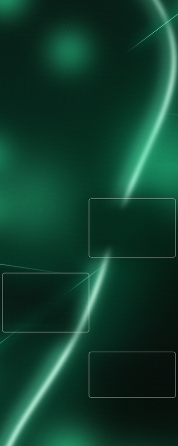

Lijst 104 · 14 november 2026
Het veld van de kaarten
De site is wit, met zwarte tekst en één mint knop. Alleen drie kaarten dragen kleur: Hoe het werkt, de €1-kaart en het slot.
Ze zijn uitgeknipt uit één grote kaart, zo breed als het scherm en zo hoog als de pagina. Op die grote kaart staan veel verschillende kenmerken door elkaar: een band licht die slingert en opkomt en verdwijnt, lijnen langs de snede van het merk, gloeden, horizons en brede zachte vlakken. Elke kaart toont zijn eigen stuk, dus geen twee kaarten zijn gelijk. Omdat het één kaart is, lopen ze in elkaar over.
Elke kaart heeft minstens één lijn van zichzelf. Waar een lijn de rand raakt, loopt hij een klein stukje door in het wit, als een ader: een glanzende streep met een hele lichte mint gloed, die op zijn plek blijft. Niets beweegt letterlijk: de lijnen en aderen staan stil. Door elke harde lijn trekt rustig een elektrische puls van licht, van donker mint heel geleidelijk naar bijna wit en weer terug, elke lijn op zijn eigen moment. De puls loopt door in de ader en stopt aan zijn uiteinde. De ader loopt als geul tot 145 px de kaart in: wit aan de rand, en hoe dieper in de kaart hoe dieper en donkerder, met een felle rand en een schaduw ernaast. De puls licht de hele ader op, ook het diepe stuk. Elke kaart heeft ook meer kleurverschil: diep zwart in de ene hoek en een zacht groen licht in de andere, alleen in zwart en groen. De kaarten zijn nu vooral zwart, met dunne, felle mint strepen die zacht gloeien in het donker. Waar een streep de rand raakt, loopt hij door als ader: twee dunne evenwijdige lijnen (de randen van de streep), met de binnenkant al een stukje in de kaart wit, die over 60 px heel geleidelijk wegvagen in het wit. Alleen waar een streep de rand echt kruist, niet waar hij er langs loopt. De voet is zwart. Onder tekst gaan de dunne lijnen weg en blijft het zachte licht half. Zo haalt wit overal minstens 11,4 : 1 (gemeten over de hele adem, op 1440 en 390 px).

De grote kaart van deze voorpagina, verkleind. De drie omlijnde rechthoeken zijn de kaarten. Met Hele kaart rechtsonder zie je hem op ware grootte, terwijl je scrolt.
Zwart#090D0B
site · tekst, balk, logo
Wit#FFFFFF
site · de grond
Mint#3DFFB0
site · bestellen; kaart · het licht
Mint 950#01140B
kaart · de diepste nacht
Mint 900#002416
kaart · de grond
Mint 800#023D29
kaart · nevel
Mint 700#016645
kaart · nevel; logo op wit
Mint 600#11976A
kaart · de grond na de druk
Mint 300#9DF5D2
kaart · sterren, kleine tekst
Mint 100#E4FCEF
kaart · de hoogste ster
Gemeten: zwart op wit 19,6 : 1 · zwart op mint 15,0 : 1 · wit op mint 950 19,0 : 1 · mint 300 op mint 950 13,8 : 1 · mint 700 op wit 7,0 : 1 (alleen het logo op wit, als het mint moet zijn).